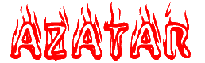
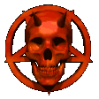
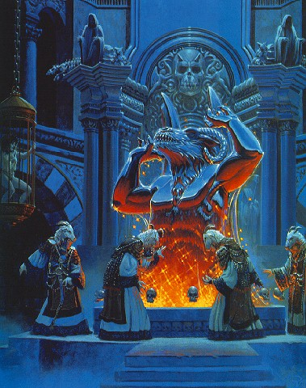
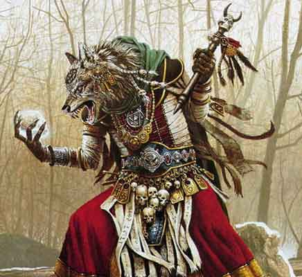
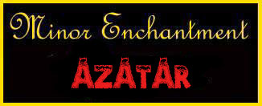
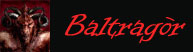
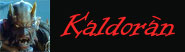
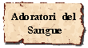
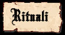

Notizie Generali
Azatàr
può essere considerata fra le più crudeli divinità del mondo di Arelia.
Azatàr, anche chiamata la divinità delle tre AAA, rappresenta la divinità del
sangue e della violenza. E' la divinità di tutte le creature malvagie, in
primis degli umanoidi, che odiano gli umani e i semi-umani e sperano di
travolgere la loro civiltà con la loro forza bruta e la loro violenza. E' la
divinità tribale per eccellenza, venerata nelle tribù umanoidi e da molte
altre creature mostruose. Inoltre questa divinità ha uno stretto legame con il
piano dimensionale esterno dominato dai demoni e con l'elemento fuoco. E'
il dio della rivincita delle creature mostruose e malvagie sulle razze
predominanti. Impone la legge del Chaos e del più forte. Secondo la mitologia
areliana, Azatàr era un potente demone proveniente da uno dei luoghi più remoti
degli inferi e chiamato dalle forze oscure per combattere al loro fianco durante
la guerra degli dei. Sopravvissuto alla guerra si rintanò nelle viscere delle
più imponenti catene montuose di Arelia con i suoi soldati (principalmente
bugbear, goblin e altri umanoidi). Per secoli si fece venerare come divinità
fino ad accumulare tanto potere divino da diventare tale e lasciare Arelia per
recarsi nella propria dimora divina. Crudele e sanguinario ispira le guerre e le
azioni malvagie che le creature umanoidi regolarmente esercitano.
Descrizioni raffiguranti il dio
 |
La
raffigurazione di Azatàr è quella di un grande e possente umanoide, alto
circa tre metri, il cui corpo, di colore rossastro, presenta diverse
fattezze demoniache. Le gambe possenti terminano con dei piedi caprini,
mentre le spalle sono sormontate da una lunga serie di aculei ossei
(secondo la leggenda, quegli aculei non sono altro che le ossa che
sorreggevano le possenti ali che furono recise al demone durante uno
scontro diretto con Tanatos nel corso della guerra tra gli dei). La
testa di Azatàr è sormontata da due paia di corna, due più piccole che
spuntano sulla fronte della divinità e due molto grandi di forma
caprina, leggermente più arretrate. Il viso è costantemente raffigurato
contratto in una smorfia di rabbia. Gli occhi sono privi pupille ma con
l'iride che presenta una gradazione gialla intensa nella parta esterne
per poi divenire rosso fuoco verso il suo centro. |
Semi-dei e minori
SEMI-DEI
: Si tratta di altri potenti demoni che assieme ad Azatàr combatterono
durante la guerra degli dei come supremi generali nelle file delle forze oscure.
Anche questi non fecero ritorno nella loro dimensione infernale ma iniziarono a
farsi venerare assieme alla divinità principale, assurgendo così al rango di semi-divinità.
 |
Baltragòr
: Semi-divinità malvagia e
violenta, si dice sia sempre alla destra di Azatàr. E' un demone gigante dalle
lunge ali di pipistrello e dalla testa di capra. lo stesso copricapo caprino è
usato dai chierici che adorano questa semi-divinità. E' la divinità dei
sacrifici umani per eccellenza e del cannibalismo.
la cui testa è sormontata da due paia di corna,ma, a differenza del dio
Azatàr, sono molto più piccole e tutte di origine caprina. Secondo
alcuni antichi studiosi, la grandezza e la forma delle corna all'interno
della mitologia di Azatàr è estremamente importante. Infatti da esse si
comprende la posizione ricoperta all'interno del Pantheon. Gli occhi di
Baltragòr sono completamente iniettati di sangue, tanto da sembrare
completamente rossi. Il corpo del demone, inoltre, è costantemente
ricoperto da ferite dalle quali sgorga perennemente sangue demoniaco. |
 |
Kaldoràn :
Divinità delle prigionia e della tortura
il cui simbolo sono delle enormi catene di ferro battuto. Questa
semi-divinità è raffigurata con un possente ogre caratterizzato da una
carnagione innaturalmente chiara, quasi albina. Il suo corpo, glabro, è
completamente ricoperto da tatuaggi e dai segni delle catene che lo
avvolgono in diverse parti del corpo essendo agganciate alla sua
armatura umanoide. La testa, priva di capelli è sormontata da due
piccole corna giallastre. Gli occhi sono completamente bianchi e lunghi
denti aguzzi sporgono dalla sua bocca. Come per ricordare l'origine
demoniaca della creatura, ai lati del mento sono presenti, due per lato,
quattro piccole caratteristiche sporgenze ossee appuntite. |
MINORI
DEMONI
: Essendo una
divinità demoniaca teoricamente qualsiasi demone può essere considerato una
sua creatura minore. Sono molti i demoni che hanno giurato fedeltà ad Azatàr e
lo aiutano a spargere il male in ogni dimensione. Esiste una vera e propria
gerarchia di demoni al servizio di Azatàr e delle sue semi-divinità.

Duty del priest e dei fedeli
Il
compito fondamentale dei chierici di Azatàr è quello di guidare e
proteggere le tribù di mostri di cui sono a capo nella lotta per il predominio.
Il mantenimento della legge del più forte e del regime del terrore è un'altro
dei loro compiti fondamentali. Inoltre, costoro devono incitare le creature
mostruose a loro devote a portare il male e la devastazione fra le civiltà umane e
semi-umane che non sono alleate alle forze oscure.
Obblighi
dei priest
Da
quando un chierico di Azatàr diviene Custode delle Fiamme deve possedere
nell'ultimo giorno dell'anno (XIII Croon) 5
punti oscuri (8 punti oscuri
se devoti di
Baltragòr o
Kaldoràn)
da
donare alla sua divinità, se non ha a disposizione questi punti perderà gli
incantesimi ed i poteri speciali fino a che non accumulerà 10 punti oscuri (15
se devoti di
Baltragòr
o
Kaldoràn),
non appena li avrà accumulati li perderà e dal giorno successivo otterrà
nuovamente i suoi poteri ed incantesimi. Se, paradossalmente, passano più anni
senza che il chierico paghi il suo debito in punti oscuri, i punti richiesti
ogni anno si accumuleranno.
Organizzazione del culto su Arelia
Il culto di Azatàr segue un'organizzazione di tipo tribale. In pratica, quando
un chierico di Azatàr di almeno 7° livello trova un gruppo di fedeli che è in
grado di sostenere il costo di un tempio procede a costruirlo e ne diviene il
Signore Demoniaco. Un tempio principale così
formato prende il nome di Dimora delle Fiamme.
A capo di ogni Dimora delle Fiamme si trova dunque un Signore Demoniaco di
almeno 7° livello, spesso però questi templi principali hanno altari distaccati
che dipendono dalla stessa Dimora delle Fiamme. Questi luoghi di culto
satellitari prendono il nome di Nido del Teschio
e sono affidati alla cura di un adepto del Signore Demoniaco che sia di almeno
del 5° livello di esperienza e che è chiamato il
Custode delle Fiamme. Tutti gli altri adepti minori
sono invece chiamati con il nome di Iniziati alla
Fiamma. All'interno del tempio il Signore Demoniaco
è l'unico capo indiscusso, ribellarsi al suo volere significa la maggior parte
delle volte andare incontro alla morte e non eseguire bene i suoi ordini
significa patire sofferenze acute. Quando un chierico raggiunge il 7° livello
può recarsi presso una nuova comunità di mostri al fine di creare una nuova
Dimora delle Fiamme, il più delle volte per ottenere il permesso di fare ciò il
nuovo Signore Demoniaco si impegna a versare tributi di sangue e denaro al suo
Signore originario. Non sono rari capovolgimenti di potere interni al tempio che
avvengono con l'uso della violenza. Le relazioni tra le varie Dimore delle
Fiamme sono buone e di cooperazione reciproca, ma in piena indipendenza (a parte
per l'ipotesi sopra citata). Non sono rarissime però le guerre fra varie tribù
mostruose che coinvolgono anche le Dimore delle Fiamme ivi presenti. Oltre ai
sacerdoti di Azatàr esiste una classe di violenti guerrieri devoti a questo
demone. Costoro prendono il nome di Adoratori del
Sangue. In pratica coloro che sono degni di servire
il potente demone combattendo con furia omicida e portando il male su tutto il
creato sono iniziati dal Signore Demoniaco al Rito
del Sangue. In questo rito speciale è fatto loro
bere il sangue di una vergine umana o semi-umana sacrificata ad Azatàr ed il
Signore Demoniaco esegue il rito affinché le forze de demoni si impossessino
dell'anima del futuro Adoratore. Si tratta di un rito assai doloroso durante il
quale al candidato sono inferte ferite con tizzoni ardenti, solo se riuscirà in
un tiro sul System Shock
l'iniziato al Sangue del Demone non morirà di dolore. Se l'Adoratore sarà
sopravvissuto al rito potrà iniziare la sua feroce carriera seguendo senza
rivoltarsi le raccomandazioni del Signore Demoniaco. Solo i più robusti fedeli
che abbiano anni di devozione al demone alle loro spalle possono essere iniziati
come Adoratori del Sangue. Il rito di iniziazione oltre a prevedere il
sacrificio della vergine richiede che polveri di metalli preziose (per un valore
pari a 1000 g.p.) siano sacrificate in onore alla divinità.

Simboli fondamentali del culto
Teschio
con corna : E'
il simbolo supremo di Azatàr, si tratta di un teschio umano con due piccole
corna sulla parte superiore della fronte. E' solitamente scolpito sulle mura dei
templi o adorna le vesti dei sacerdoti.
Fiamme
eterne : Le
fiamme sono l'altro simbolo ricorrente del culto di Azatàr. Spesso nei templi si
trovano enormi torce oppure grandi bracieri (o vere e proprie vasche di tizzoni
ardenti) che sono
sempre accese e da cui sprigiona il tipico calore che si diffonde costantemente
nei templi di Azatàr.
Sangue
del debole : Il
sangue anche è molto utilizzato come simbolo di vittoria e dei sacrifici che il
demone richiede. Rappresenta il sangue delle razze nemiche (umani e semi-umani
in via principale) che deve essere versato a fiumi per placare la sete del
demone. Il sangue spesso viene conservato in speciali oggetti sacri o bagna i
pavimenti e le mura del tempio.
Regole fondamentali per i riti
del culto
Solo
il Signore Demoniaco ed i Custodi delle Fiamme possono eseguire i rituali. Tutti
i riti di Azatàr sono violenti e sanguinari e richiedono che le creature
umanoidi partecipino osservando il male portato nel mondo dalla proprio
divinità, per questo motivo non sono mai effettuati riti segreti per i soli
chierici.
Oggetti principali del culto
1)
Simbolo sacro :
La Staffa del Teschio
E'
il vero simbolo sacro del culto, si tratta di una staffa o di una piccola verga
al culmine della quale è incastonato un teschio solitamente il teschio di un
bambino umano). La staffa dei Signori
Demoniaci deve essere ingioiellata ed abbellita con incisioni e rune malvagie
per un valore minimo di 1000 g.p. (anche i Custodi delle Fiamme la portano
adornata per differenziarsi dagli altri Iniziati, il valore in questo caso è di
minimo 200 g.p.), alcune volte è anche incantata con i poteri delle tenebre.
In ogni caso ha un peso pari a 2 libbre.
2)
La Veste di Sangue :
Si tratta di una veste che necessariamente i
chierici devono portare sopra i vestiti o le corazze, si tratta per lo più di
una larga gonna di preziosissimo velluto rosso, imbevuta nel sangue sacrificale
del tempio per almeno un mese e sottoposta a una speciale pulitura che impedisce al
sangue di lasciare definitivamente il tessuto ormai intriso. Spesso è adornata
con bordi d'oro e con strisce di pelle umana recanti incisioni runiche malvagie.
Il valore minimo di una tale veste è di 100 g.p.
3)
L'Altare Sacrificale :
E' il luogo centrale del tempio si Azatàr si
tratta di un grosso altare coperto da una lamina di ferro battuto (solitamente
arrugginita e incrostata di sangue) adornata da incisioni runiche inneggianti
alle forze demoniache e da elementi usati nei sacrifici come spuntoni di ferro,
catene e arnesi da tortura. Questa placca metallica che misura mediamente 2
metri ed è larga 1 metro (lo spessore è di circa 5 cm.) è posata su un altare
di pietra lavica o di rocce rare il cui interno è scavato in modo tale da poter
contenere brace e fuoco. La vittima sacrificale infatti prima di essere uccisa
è ustionata sulla piastra metallica resa incandescente dal fuoco contenuto
nell'altare. Il costo di un altare di questo genere si aggira intorno ai 1000
g,p.
4)
Il Mortion :
Il Mortion è una pila di teschi
(solitamente tre) ricoperti di sangue, che adorna i templi di Azatàr o le vesti
dei loro sacerdoti. Simboleggia la morte che Azatàr porta a tutti coloro non si
sottomettono al suo volere.
5)
Il Capro Malefico :
E’ il copricapo utilizzato dai seguaci di
Baltragòr, si tratta della testa mummificata di un capro maschio ucciso
seguendo un particolare rituale notturno. Alcune volte è indossato anche dai chierici
di Azatàr che non adorano direttamente Baltragòr.
6)
Il Dolorians :
E’ la frusta utilizzata per torturare le
vittime prima del sacrifico. Si tratta di un gatto a nove code sulle cui code
sono inseriti dei lunghi aculei metallici in grado di dilaniare la pelle delle
vittime. Inoltre il Dolorians è anche il simbolo della semi-divinità Kaldoràn.
Schema di gioco per i p.g.
Allineamento
Divinità
:
Chaotic Evil
Chierici
:
Neutral Evil, Chaotic Evil
Adoratori
del Sangue
:
Neutral Evil
Seguaci
: Tutti gli Evil
Abilità
minime richieste
Saggezza
9 (con 16 o + = + 10% Xp)
Razze
permesse
Qualsiasi
razza mostruosa e umanoide, raramente umani.
NonWeapon
Proficiencies ( priest, general )
Required = Religion
(devoti di Kaldoràn
aggiungono Torture)
Raccomandate =
Torture, Ceremony, Modern Languages (lingue umanoidi).
Weapon
Proficiencies
Required = Nessuna
Armi
e armature permesse
Armi:
Spade:
Great Scimitar, Scimitar. Asce:
Nessuna Restrizione. Mazze:
Nessuna Restrizione.
Flagelli:
Nessuna Restrizione.
Martelli:
Maul, Mallet, Sledge.
Pugnali:
Machete, Bone Dagger. Arma
ad Asta:
Nessuna Restrizione. Altre
Armi:
Frusta da Guerra.
POTERI
SPECIALI
Momento
di flusso dell'energia divina: Il
momento utilizzato da Azatàr è il crepuscolo, quando le creature umanoidi,
prima rintanate, escono dei loro nascondigli per portare morte e razzie (ore
20.30).
Creare
minor enchantments a partire dal 4° livello.

Tolleranza
Infernale : Per la connessione della loro divinità con le
fiamme infernali i chierici di Azatàr sono particolarmente resistenti al fuoco
ed al calore. Ogni chierico di Azatàr, in
particolare, ridurrà tutti i danni subiti da fuoco
e da calore
del 25% (riduzione calcolata per difetto) per poi ridurre ulteriormente ogni
singolo danno residuo subito di ulteriori 3 punti danno. Se, ad esempio, un
chierico di Azatàr con questa abilità subisce 5 danni da fuoco
(dopo aver ridotto precedentemente i danni superando l'eventuale tiro salvezza
concesso) costui ridurrà questi danni del 25% per difetto eliminando 1 danno e
ridurrà i quattro danni restanti di 3 danni subendo quindi un unico punto danno
da fuoco. Questa riduzione non si cumula con altre riduzioni dovute ad effetti
magici, incantesimi o poteri speciali, applicandosi unicamente la riduzione in
grado di ridurre maggiormente il danno subito.
A partire dal 5° livello :
Soggiogazione
degli Esseri Inferiori
: Azatàr consente ai loro chierici di dominare totalmente e permanentemente
alcune creature umanoidi che divengono, in questo modo, loro fedelissimi
servitori. Il tipo ed il numero di tali creature dipende dal livello del
chierico di Azatàr. Quando un chierico di Azatàr incontra una creatura umanoide
di taglia massima large,
che non abbia un ammontare di dadi vita superiore
alla metà per eccesso del livello di esperienza raggiunto dal chierico
ed, in ogni caso, non superiore a cinque, che non sia appartenente ad alcuna
classe e che non abbia
un'intelligenza superiore ad Average (10), può
provare a soggiogarla. Per effettuare questo tentativo occorre che il chierico
si trovi entro 15 metri dalla creatura e che
entrambi possano vedersi bene, la creatura,
inoltre, non deve essere stata ferita in alcun modo
dal chierico o dai membri del suo gruppo. Se tutti i precedenti requisiti sono
rispettati il chierico può provare la soggiogazione che si considera come
lanciare un incantesimo con casting time di un round ma
senza che sia possibile perdere la concentrazione.
Alla fine del round la vittima dovrà superare un tiro salvezza su mente (con un bonus di +20%
qualora si tratti della figura dominante tra
quelle presenti, ossia il capo degli altri umanoidi). Se il tiro salvezza
fallisce la creatura cade sotto totale controllo del chierico di Azatàr
(nonostante non sia necessario che il chierico sappia comunicare per provare a
soggiogare una creatura occorre, però, che il chierico sappia comunicare con
questa al fine di impartirle i propri ordini, in mancanza la creatura seguirà
il chierico difendendolo in caso di manifesto pericolo). Da quel momento in poi
la creatura seguirà il chierico adottando un comportamento profondamente
servile e lo obbedirà fedelmente senza timore per la propria vita, accettando
anche ordini per costei mortali ed abbandonando ogni precedente mansione (sarà
il chierico a doversi occupare dei bisogni primari del suo servo). L'obbedienza,
però, è personale e non coinvolge circostanze precedenti, né i beni
precedentemente posseduti (tranne quelli strettamente personali) dalla creatura.
Infatti, se viene soggiogata una figura dominante tribale questa, ridotta
visibilmente ad uno stato di schiavitù, perderà ogni influenza sui suoi
sottoposti e sarà presto sostituita da un altro leader. Dopo essere stata
soggiogata la creatura perde ogni attitudine al comando e avverte un costante
bisogno di vedere il chierico. Qualora non possa vedere il chierico per più di
un mese andrà in uno stato di apatia che le impedirà di compiere ogni
attività e che finirà per farla morire di inedia nel giro di 2d10 giorni. Ciò
non accade solo se il compito della creatura è quello di difendere un tempio
consacrato, in questo caso il vincolo con Azatàr supplirà alla mancanza, anche
prolungata, della figura del chierico. Se, invece, il tiro salvezza riesce la
creatura verrà colta da un raptus omicida nei confronti del chierico e si
scaglierà infuriata contro di lui cercando di ucciderlo ed ottenendo,
esclusivamente nei suoi confronti, un bonus di +1 ai tiri per colpire ed alle ferite.
Si tratta di una furia incontrollabile e demoniaca
a cui la stessa creatura non può sottrarsi, questa rabbia durerà per 24 ore.
In ogni caso, una creatura può essere sottoposta ad un solo tentativo di
controllo, da parte dello stesso chierico, nella propria vita. Il
chierico può soggiogare un ammontare totale di dadi vita di creature pari al
suo livello. Una volta
soggiogata il chierico non può liberare la creatura, solo con la sua morte
potrà disporre di dadi vita "liberi" per soggiogare nuove e più
forti creature.
A partire dal
7° livello : Furia demoniaca
: Una volta raggiunto il 7° livello il chierico di Azatàr può invocare, una
volta per flusso di energia divina,
la propria divinità per far penetrare nel proprio corpo le forze
demoniache. Questa abilità speciale può essere utilizzata solo nel corso di una
battaglia considerabile impegnativa per il chierico od il suo gruppo. La trasformazione
si considera un'azione complessa dalla durata di un intero round nel quale il
chierico non potrà compiere altre azioni e perderà eventuali bonus della
destrezza nella trasformazione (non occorre però che si concentri per terminare
la trasformazione). Una volta trasformato gli occhi del chierico diventeranno
totalmente rossi e le sue pupille scompariranno, bava mista a sangue uscirà
dalla sua bocca e le mani si trasformeranno in artigli affilati. La presenza
demoniaca permarrà nei 5 round successivi
nel corpo del chierico, al termine dei quali il chierico riprenderà
immediatamente le sue normali sembianze. Come effetti di tale penetrazione
demoniaca il chierico recupererà fino a 15 punti ferita
persi in precedenza (ma non otterrà più dei
suoi normali punti ferita e non potrà dirigere queste cure su ferite risultato
di colpi critici né potrà recuperare danni che richiedano un rigenerazione come,
ad esempio, i danni da acido), inoltre otterrà a tutti i suoi attacchi +1 al tiro
per colpire e + 2 ai danni a causa della violenza e della forza acquisita
(si considerano bonus di forza) e la
sua classe armatura migliorerà di un punto (considerato
un bonus dovuto all'agilità
per
i suoi rapidi movimenti).
Durante la trasformazione il chierico però non ha la possibilità di lanciare
alcun incantesimo
in quanto la furia omicida non gli permette di concentrarsi
adeguatamente (parimenti non potrà utilizzare oggetti, poteri ed altre abilità
che richiedano un seppure breve mantenimento della concentrazione).
CHIERICI DEVOTI ALLE SEMI-DIVINITÀ
Quando si diviene chierici di Azatàr è possibile scegliere di divenire anche
devoti ad una delle sue divinità. Questa scelta può essere effettuata solo in
origine e non può essere successivamente modificata dal chierico. A fronte di
ulteriori restrizioni i chierici devoti alle semi-divinità acquistano poteri ed
incantesimi supplementari come specificato a seconda della semi-divinità alla
quale decidono di legarsi.

I devoti di Baltragòr ottengono i
seguenti benefici:
- Ottengono gratuitamente
la competenza non relativa alle armi
Ceremony.
- Ottengono un bonus di +3 al tiro per determinare la
Ricompensa Oscura
ottenuta all'esito di un qualsiasi sacrificio rituale.
- Possono selezionare l'incantesimo supplementare
Fanatic Nourishment
del terzo livello di potere
speciale.
I devoti di Baltragòr ottengono la seguente restrizione:
- Devono donare alla divinità (come tributo a Baltragòr)
3 Punti Oscuri supplementari
alla fine di ogni anno (ossia un totale di 8 punti oscuri).

I devoti di Kaldoràn ottengono i
seguenti benefici:
- Ottengono gratuitamente la competenza non relativa alle armi
Torture.
- Pagano solo 2 punti di combattimento il colpo speciale
Causare Grande Dolore
ed impongono alla vittima una
penalità di -5% al relativo tiro salvezza.
- Possono selezionare l'incantesimo supplementare
Chains of Imprisonement
del secondo livello di potere speciale.
I devoti di Kaldoràn ottengono la seguente restrizione:
- Devono donare alla divinità (come tributo a Kaldoràn)
3 Punti Oscuri supplementari
alla fine di ogni anno (ossia un totale di 8 punti oscuri).
ACCESSO AGLI INCANTESIMI DI AZATÀR
Mancando un'organizzazione centralizzata del culto, l'accesso ed il relativo
costo degli incantesimi e dei poteri dei sacerdoti di Azatàr varia notevolmente
da zona a zona. Un valore certamente indicativo può essere però rappresentato
dalle tariffe imposte con Bollo Imperiale a seguito degli accordi intervenuti tra
Impero Scuro e le principali Dimore delle Fiamme in contatto con tale
organizzazione statale. Occorre rammentare, infatti, che la legislazione
imperiale ammette ufficialmente il culto di Azatàr tra le religioni praticabili
legalmente nel territorio dell'Impero Scuro. In base alla previsione su
menzionata, tutti i chierici di Azatàr sono tenuti ad applicare le seguenti
tariffe nell'Impero Scuro o comunque nei confronti dei membri di tale Impero:
|
Tipologia di
intervento divino |
Costo per i fedeli |
Costo per i sostenitori
esterni |
|
Orison |
5 karsi |
10 karsi |
|
Incantesimo di 1° livello
di potere |
10 karsi |
20 karsi |
|
Incantesimo di 2° livello
di potere |
30 karsi |
60 karsi |
|
Incantesimo di 3° livello
di potere |
90 karsi |
175 karsi |
|
Incantesimo di 4° livello
di potere |
175 karsi |
350 karsi |
|
Incantesimo di 5° livello
di potere |
350 karsi |
700 karsi |
Di regola, gli incantesimi di
Azatàr possono svolgere effetti favorevoli esclusivamente sui fedeli della divinità.
In alcuni casi, però, un stretto legame unisce a livello personale, un
determinato chierico di Azatàr, con alcuni non credenti che non siano però
fedeli di divinità della Fratellanza della Luce. In questi
casi, costoro stringono un legame di sangue con il chierico che li considera
propri personali amici ed acquisiscono il titolo di
sostenitori esterni.
Laddove non diversamente specificato, quindi, su costoro potranno avere effetti
benefici le magie lanciate unicamente dal chierico che ha concesso loro tale
qualità (nulla vieta, ovviamente, che una creatura possa essere sostenitrice di
più di un chierico di Azatàr, sempre che tale scelta sia accettata anche da
quest'ultimi). In compenso, i sostenitori esterni, oltre a dover retribuire il
chierico di Azatàr per le singole magie che utilizzano, si impegnano a versare
annualmente a costui una somma in monete d'oro a titolo di regalia personale.
Tale somma varia a seconda del livello di esperienza raggiunto dal chierico come
indicato nella seguente tabella. Su tali
donazioni il chierico non dovrà versare alcuna tassa al culto. Come simbolo di tale
rapporto il chierico donerà a costoro un bracciale di pelle costellato di ossa
umanoidi (valore di mercato 10 g.p.)
che dovrà essere necessariamente e costantemente indossato. Deve osservarsi che
i sostenitori esterni non sono tenuti a
rispettare le regole del culto di Azatar né a partecipare ai suoi riti, dovranno
però mantenere e curare il rapporto di amicizia che li lega al chierico il
quale potrà in ogni momento revocare il privilegio loro concesso. Una volta
revocato il privilegio il medesimo chierico non potrà nuovamente concederlo alla
stessa creatura prima che sia passato un intero anno.
|
Livello del chierico di
Azatàr |
Regalia Annua Richiesta |
Livello del chierico di
Azatàr |
Regalia Annua Richiesta |
|
1° livello |
5 monete d'oro |
7° livello |
210 monete d'oro |
|
2° livello |
10 monete d'oro |
8° livello |
280 monete d'oro |
|
3° livello |
30 monete d'oro |
9° livello |
360 monete d'oro |
|
4° livello |
60 monete d'oro |
10° livello |
450 monete d'oro |
|
5° livello |
100 monete d'oro |
11° livello |
550 monete d'oro |
|
6° livello |
150 monete d'oro |
12° livello |
660 monete d'oro |
INCANTESIMI
Gli
incantesimi di Azatàr sono molto forti in combattimento, si tratta
principalmente di incantesimi che usano le fiamme per provocare morte e dolore,
oppure di incantesimi che sfruttano la connessione della propria divinità con i
piani dimensionali dei malefici demoni, infine che rispondono al Caos supremo
di cui Azatàr è messaggero.
Incantesimi
generali (Player's
Handbook,Tome of Magic,Spell and Magic,Necromancers)
1°
livello
|
Battlefate
|
|
Call Upon Faith
|
|
Cause
Fear
|
|
Combine
|
|
Detect Magic
|
|
Malison
|
|
Torch of Everburning
|
2°
livello
|
Chaos Ward
|
|
Fire Tentacle
|
|
Fire Trap
|
|
Fire
Weapon
|
|
Heat Metal
|
|
Produce Flame
|
|
Sanctify
|
3°
livello
|
Dispel
Magic
|
|
Glyph of Warding
|
|
Random
Casuality
|
|
Summon
Insects
|
4°
livello
|
Chaotic
Combat
|
|
Cloak
of Fear
|
|
Ground of Fire
|
|
Summon Giant
Insects
|
5°
livello
|
Flame
Strike
|
|
Insect
Plague
|
|
Wall
of Fire
|
|
Animate
Flame
|
|
Chaotic
Command
|
Incantesimi
speciali
(Unici
della divinità)
1°
livello
|
Demonic Nourishment
|
|
Demonic
Weapon
|
|
Lesser
Infernal Flame
|
|
Toxic
Emission
|
2°
livello
|
Chains of Imprisonement
(solo
per i devoti di Kaldoràn)
|
|
Devourer Eye Summoning
|
|
Flaming
Skull
|
|
Minor
Wall of Heat
|
|
Pain
of the Hell
|
3°
livello
|
Ash Soldier Summoning
|
|
Demonic Violence
|
|
Fanatic Nourishment
(solo
per i devoti di Baltragòr)
|
|
Infernal
Flame
|
|
Sacrificial Offering
|



